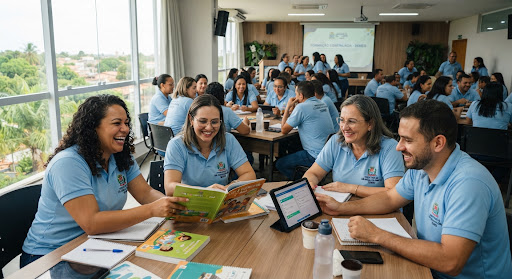

developer_board
POP-ED 01
Procedimentos Operacionais Padrão (POP)
Rotinas de matrícula, transferência, registro de frequência e guarda de documentação do arquivo escolar.
Central unificada de suporte técnico, publicações pedagógicas, expedientes de pessoal e solicitações funcionais para docentes, gestores e servidores de apoio de São Miguel dos Campos.
Protocolos operacionais padronizados, manuais de sistemas de escrituração e diretrizes administrativas para aplicação na rotina das 24 unidades escolares da rede municipal.
Rotinas de matrícula, transferência, registro de frequência e guarda de documentação do arquivo escolar.
Instruções passo a passo para fechamento bimestral, lançamento de notas, faltas e relatórios descritivos.
Execução de despesas, emissão de notas fiscais, cotação prévia e conciliação bancária dos recursos da escola.
Critérios para progressão horizontal e vertical, averbação de diplomas de pós-graduação e avaliação periódica.
Informativo oficial dos profissionais da educação municipal de São Miguel dos Campos. Projetos inovadores, relatos de sala de aula e prestação de contas pedagógica.

local_fire_department Destaque do MêsNesta edição especial: os novos laboratórios de ciências inaugurados no bairro Fátima, o plano de formação continuada para os 480 docentes municipais e a premiação dos projetos de leitura da Escola Noêmia Cavalcanti.
As novas diretrizes da BNCC municipal e as metas de proficiência para o SAEB no ensino fundamental.
Conheça os 12 projetos premiados e o balanço dos avanços de infraestrutura das unidades da zona rural.
O fortalecimento das Salas de Recursos Multifuncionais e o trabalho dos cuidadores pedagógicos.
Homenagem aos 30 anos de docência e o impacto da educação nas comunidades ribeirinhas de São Miguel.
Repositório padronizado com formulários funcionais editáveis, solicitações de direitos estatutários, certidões e legislação do magistério de São Miguel dos Campos.
| Título do Documento / Finalidade | Público / Setor | Atualização | Formato | Downloads |
|---|---|---|---|---|
|
description
Requerimento Padrão de Licença Prêmio por Assiduidade
Para servidores estatutários que completaram 5 anos ininterruptos de efetivo exercício.
|
Magistério & Apoio | Jan/2025 | PDF + DOCX |
|
|
description
Formulário de Progressão por Titulação (PCCR)
Averbação de Especialização, Mestrado e Doutorado para mudança de nível funcional.
|
Professores Efetivos | Fev/2025 | PDF + DOCX |
|
|
description
Requerimento de Abono de Falta e Justificativa de Ponto
Comprovante de comparecimento a exames, júri popular ou doação de sangue.
|
Todos os Servidores | Nov/2024 |
|
|
|
description
Solicitação de Férias e Escala de Recesso Escolar
Programação regulamentar de período de fruição de férias individuais ou coletivas.
|
Equipes Gestoras | Dez/2024 | PDF + DOCX |
|
Nenhum formulário corresponde ao termo pesquisado.
Documento comprobatório para fins de aposentadoria junto ao Instituto de Previdência Municipal (SAMPPREV).
Comprovação de atuação em sala para fins de adicionais de magistério e pós-graduação.
Nenhuma declaração corresponde ao termo pesquisado.
Regime jurídico, direitos, deveres, licenças e regime disciplinar docente.
Tabela de vencimentos, enquadramento de classes e coeficientes de titulação.
Distribuição de 1/3 da jornada de trabalho para planejamento e formação.
Nenhum marco legal corresponde ao termo pesquisado.
Servidores recém-empossados devem utilizar a matrícula funcional e o CPF para o primeiro cadastro de senha na folha de pagamento municipal.
Atestados com afastamento superior a 3 (três) dias devem ser homologados perante a Junta Médica Oficial do Município de São Miguel dos Campos.
Dúvidas sobre lotação, férias, remoção e processos funcionais com a equipe de Recursos Humanos da Secretaria de Educação.
Todas as solicitações funcionais e formulários submetidos neste portal são tratados sob estrita conformidade com a Lei Federal nº 13.709/2018. Seus dados estão seguros e vinculados unicamente ao seu dossiê administrativo.
Documento institucional de uso interno e orientação aos servidores da rede municipal de ensino de São Miguel dos Campos - AL.